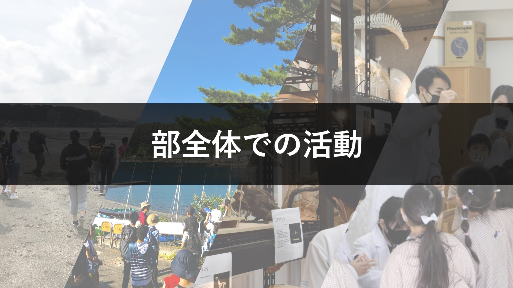

博物館見学会
博物館見学会は、自然を探求する精神を学び、環境や生物の多様性について知る機会を得るとともに、先人の技術的探求を学び、今後の活動の基礎とすることを目的として実施しています。
【国立科学博物館見学会】
＊2019年6月実施
特別展
大哺乳類展２
の見学と、常設展のガイドツアーを実施しました。もっと具体的な感想等をここで述べる。もっと具体的な感想等をここで述べる。もっと具体的な感想等をここで述べる。もっと具体的な感想等をここで述べる。
自然観察会
自然観察会は、自然を愛する心を養い、環境や生物の多様性について学ぶ機会を得るとともに、周囲の自然物を深く観察し、考察する科学的な姿勢を養うことを目的として実施しています。
【鎌倉・江ノ島観察会】
＊2019年6月実施
鎌倉・江ノ島の海岸にて漂着生物の観察や地学巡検、新江ノ島水族館の見学を実施しました。もっと具体的な感想等をここで述べる。もっと具体的な感想等をここで述べる。もっと具体的な感想等をここで述べる。
夏合宿
技術班では、
エコワンチャレンジカップ
に出場する電気自動車を製作したり、ドローンなどの操縦やホームページの作成に必要なプログラミングを学んでいます。
【夏合宿 in伊豆半島】
＊2019年8月実施
オガワコマッコウのストランディング調査を行いました。このことはとってもすごいことで、今なお、理科部史上最も貴重な調査として言い伝えられています。書くのがめんどくさくなってきたので、もうやめる。オガワコマッコウのストランディング調査を行いました。このことはとってもすごいことで、今なお、理科部史上最も貴重な調査として言い伝えられています。書くのがめんどくさくなってきたので、もうやめる。
TOPに戻る
more →
各班ごとの活動
more →
部活動紹介ビデオ
more →
東京都市大学等々力中学校高等学校 理科部 Twitter
東京都市大学等々力中学校高等学校 ホームページ
Copyright©TCU Todoroki Science Research Club , All Rights Reserved.